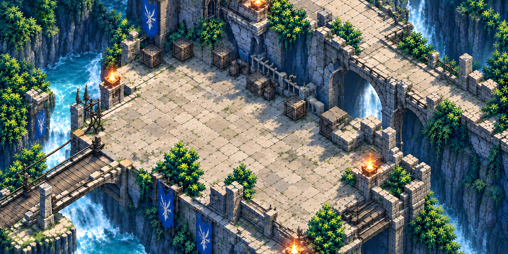
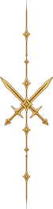
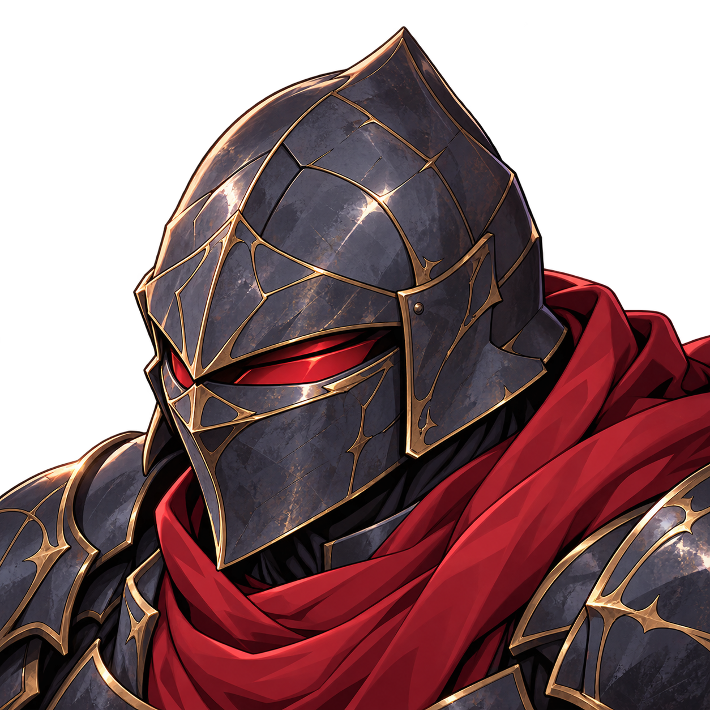

勝利条件すべての敵を撃破する

戦場を準備しています
左の山形で味方一覧を開閉。顔または盤面の味方で人物を選択。敵の騎士を押すと予測が開きます。
青いマスを押すと選択ユニットが移動します。予測をキャンセルすると移動後の位置へ戻ります。「攻撃する」で見本の攻撃を再生し、結果を表示します。
Escは閉じる、Enter・Spaceはボタン操作。左右キーは味方切り替え、Fは予測、Rはリセット。
参考画像の人物・数値を使ったUI試作です。正式な能力値・スキル・武器仕様の決定や、本編の戦闘処理への接続は行っていません。新しい素材はこの見本専用です。